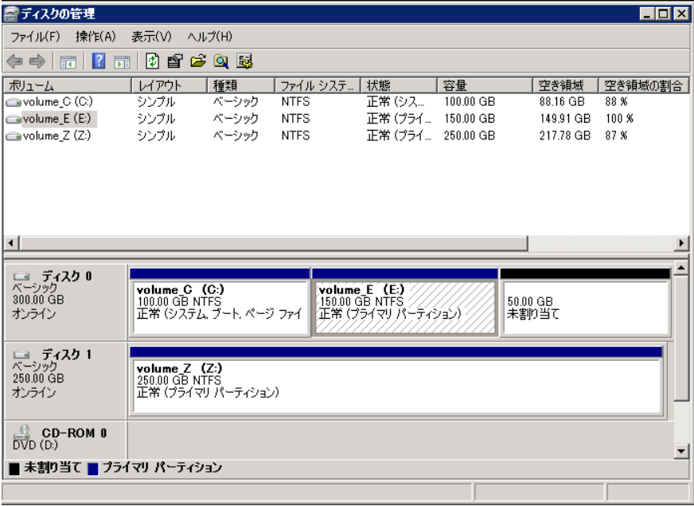
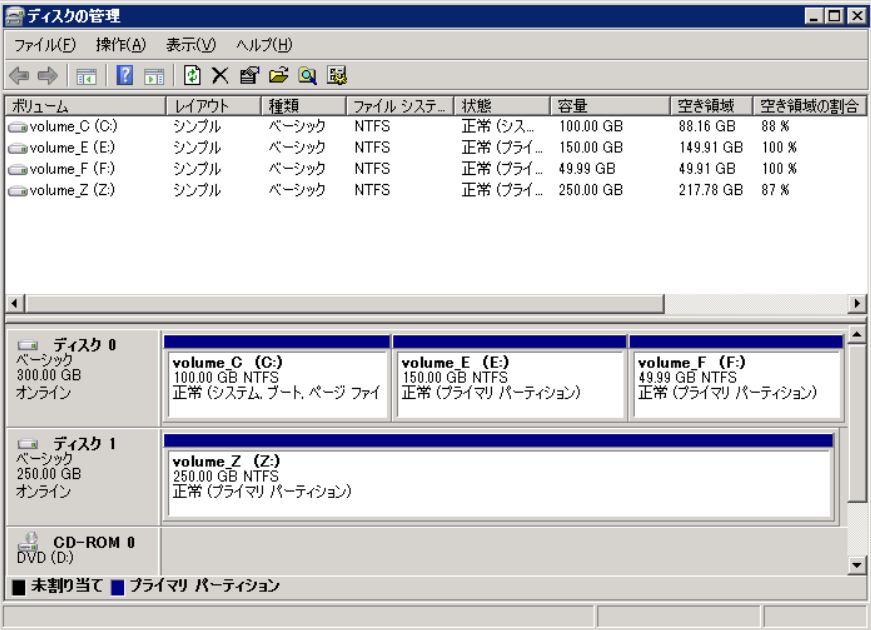
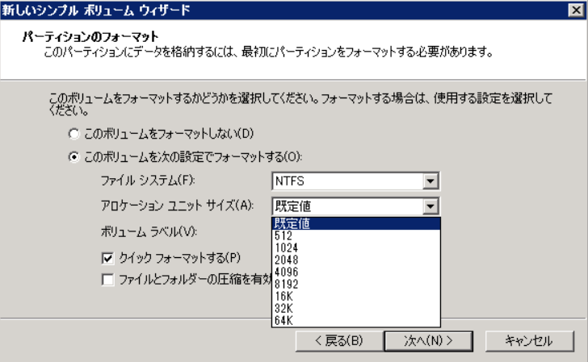

※ 本記事は弊社の Technet から移行した記事です。
こんにちは。Windows プラットフォーム サポートの小池です。
長く運用しているサーバーでは 「ボリュームの空き領域が減少したため、空き領域を増やしたい」 というお問い合わせをいただくことがあります。
空き領域を増やすためには、一般的には以下の 2 つの方法があります。
方法 (1) ボリューム サイズを拡張する
方法 (2) ボリューム内の不要ファイルを削除して、空き領域を作り出す
今回は 方法 (1) について、Windows Server 2008 以降の OS を対象としてボリュームを拡張する方法をご案内いたします。
なお、方法 (2) については、ディスク クリーンアップ ツールを用いて不要ファイルを削除する方法が安全で有効です。こちらは別途公開情報がございますので、こちらをご確認ください。
– 公開情報
“ディスク クリーンアップ ツールについて”
URL : https://learn.microsoft.com/ja-jp/archive/blogs/askcorejp/diskcleanup
■ ボリューム拡張が可能な場合とそうでない場合について
拡張が可能なボリュームは、ディスク上に未割り当ての領域が連続 (隣接) している必要があります。
図1

例えば上の図1. の場合では、ボリューム E: に連続する未割り当て領域があるため拡張が可能です。
しかしながら、ボリューム C: はディスク上に未割り当ての領域があるものの、連続していないため拡張することができません。
図2.

上の図2. の場合では、ボリューム E: や F: を拡張しようとした場合でも、当然ながら空き領域がないため拡張することができません。
■ ボリュームの拡張手順 例
図1. のようにボリュームが拡張可能である場合、以下の手順で拡張を行うことが一般的です。
// ボリュームの拡張手順
- “ディスクの管理” 画面を起動します。
- 拡張したいボリュームを右クリックし、[ボリュームの拡張] をクリックします。
- ボリュームの拡張ウィザードが起動します。ウィザードに沿って拡張を行います。
- [完了] をクリックするとボリュームが拡張されます。
– 公開情報
“Extend a Volume”
URL : https://learn.microsoft.com/en-us/previous-versions/windows/it-pro/windows-server-2008-R2-and-2008/cc771939(v=ws.11)
では図2. の状況でボリューム E: を拡張したい場合はどうすればよいでしょうか。
この場合は、ボリューム F: を削除して未割り当て領域を強引に作成しなければ、ボリューム E: を拡張することができません。
図2. を例に、以下に手順をご説明いたします。
// 未割り当て領域の作成とボリュームの拡張手順
- “ディスクの管理” 画面を起動します。
- ボリューム E: とは別のディスク上に十分な空きがあるボリューム Z: があります。
….まずはボリューム F: の必要なデータを Z: に移動します。 - ボリューム F: を右クリックし、メニューから [ボリュームの削除] をクリックします。
….全てのデータが削除されるメッセージが表示されます。問題なければ [はい] をクリックして先に進みます。 - ボリュームの削除が完了すると、以下のようにボリューム E: の連続する領域に未割り当て領域が表示されます。
- ボリューム E: を右クリックし、[ボリュームの拡張] をクリックします。
- ボリュームの拡張ウィザードが起動します。ウィザードに沿って拡張を行います。
- [完了] をクリックするとボリュームが拡張されます。
以上でボリュームの拡張の対応は完了です。
■ よくあるお問い合わせ “ディスクの管理上のボリュームサイズとエクスプローラー上でのボリュームサイズが一致しない” について
通常、ボリュームの拡張を行うと、パーティションの拡張、および、ファイル システムの拡張が同時に行われますが、まれにファイル システムの拡張に失敗し、パーティション サイズとファイル システムが別の値になることがあります。この場合、ディスクの管理の画面上はサイズが拡張されているのに対して、エクスプローラーから参照するとボリュームの容量が増えていない状況となり、使用可能な領域は増えておりません。
このような場合には、ファイル システムをパーティションのサイズまで手動で拡張する必要があります。ファイル システムの拡張は diskpart ユーティリティから実施します。
// ファイル システムの拡張方法
管理者権限でコマンド プロンプトを起動します。
diskpart を起動します。
ボリュームをリストします。
DISKPART> list volume
ボリュームを選択します。
(X には 3. で確認したボリューム番号を指定します。)DISKPART> select volume X
ファイル システムを拡張します。
DISKPART> extend filesystem
diskpart を終了します。
DISKPART> exit
補足) システムへの影響について
ボリューム拡張作業、およびファイル システム拡張作業は、システムの再起動、サービスの再起動を伴いません。負荷も少ないため、システムへの影響はほとんどなく、実績の多い作業です。
– 公開情報
“Extend”
URL : https://learn.microsoft.com/en-us/previous-versions/windows/it-pro/windows-server-2008-R2-and-2008/cc770938(v=ws.10)?redirectedfrom=MSDN
■ ボリュームの最大サイズについて
ボリュームの拡張にも限界があります。
はじめにそのボリュームを作成した際に、”アロケーション ユニット サイズ” を選択しているかと思います。このサイズによって、拡張できる最大のボリューム サイズが決定されます。

クラスター サイズ 最大ボリュームおよびファイル 4 KB (既定のサイズ) 16 TB 8 KB 32 TB 16 KB 64 TB 32 KB 128 TB 64 KB (以前の最大値) 256 TB 128 KB 512 TB 256 KB 1 PB 512 KB 2 PB 1024 KB 4 PB 2048 KB (最大サイズ) 8 PB
つまり、アロケーション ユニット サイズが 4 KB のボリュームの場合は、ボリュームは拡張できても 16 TB が最大ということになります。現在のアロケーション ユニット サイズは、以下のコマンドを実行することで確認が可能です。
fsutil fsinfo ntfsinfo <ドライブ レター>
コマンド実行の例)
——————————————————————
C:\Users\Administrator>fsutil fsinfo ntfsinfo E:
<<中略>>
クラスターあたりのバイト数 : 4096
——————————————————————
※ “クラスター当たりのバイト数” の項目がアロケーション ユニットサイズです。この例では 4 KB です。
補足) アロケーション ユニット サイズに関する注意点
一度決定したアロケーション ユニット サイズは、後から変更することはできません。変更したい場合は、ボリュームをフォーマットして再作成いただくことになります。
将来的に 100 TB などの大容量のボリュームの運用を行う予定がある場合は、ボリュームの作成時に最適なアロケーション ユニット サイズをあらかじめご選択ください。
逆に、16 TB よりも大きいサイズへ拡張する予定のないボリュームについては、ディスク領域の有効利用のため、アロケーション ユニット サイズは “既定値” もしくは “4 KB” をご選択いただくことを推奨します。
■ 参考) ボリュームの縮小について
ボリュームは拡張が可能な一方で、縮小も可能です。
// ボリュームの縮小手順
- “ディスクの管理” 画面を起動します。
- 縮小したいボリュームを右クリックし、[ボリュームの縮小] をクリックします。
- ボリュームの縮小画面が起動します。縮小可能なサイズが計算・表示されます。
- [縮小] をクリックするとボリュームが縮小されます。
– 公開情報
“Shrink a basic volume”
URL : https://learn.microsoft.com/en-us/windows-server/storage/disk-management/shrink-a-basic-volume
今回はボリュームの拡張についてご紹介させていただきましたが、いかがでしたでしょうか。
本ブログが少しでも皆様のお役に立てますと幸いです。